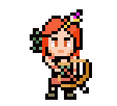

Personagens

Arqueiro
Desde tenra idade, o Arqueiro Draxiano é treinado para dominar a arte de empunhar o arco. Eles são capazes de causar grandes danos a longa distância. Além de sua habilidade com armas, eles são a classe mais rápida e ágil do jogo. Seu herói de classe é Drexx, o maior arqueiro.